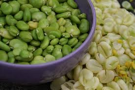

Fèves des marais

Fèves des marais (Vicia Faba de la famille des Fabacées)
Attention : hautement toxique par ingestion pour le Korat !
Partie toxique pour les chats en général et le Korat en particulier :
Fèves crues ou cuites : substance toxique dans les graines et le pollen.
Symptômes du processus pathologique :
Manque d'appétit, fièvre, vomissements, diarrhée, coliques, oligurie : la quantité d'urine sécrétée est en dessous de la normale en comparaison du liquide ingéré, anémie, réduction de la capacité d'oxygénation du sang, pâleur, spécialement dans les plis de la peau, les coins de la bouche et les paupières, tuméfaction de la rate et du foie.